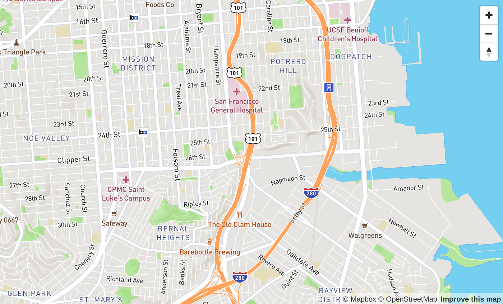

My Journey From VS Code to VIM

3 mins
Learn the Pros and Cons of Using VS Code Vs VIM Click here to read!.
Dining Halls Review Podcast
10 mins
Are you an incoming or transfer student at Virginia Tech? Then this is the podcast for you! We review the different dining halls at Virginia Tech, so you already know the best eats on campus before wasting your money on the trash ones! Click here to listen!

Here is a side project I am working on called Find My Event
45 mins
It is a web app in development that shows you a map of events near you! Think of something like SnapMaps! Link to Github repo if you are interested!